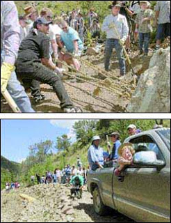

"... it will never be known what acts of cowardice have been motivated by fear of looking insufficiently progressive." -- Charles Peguy
If I were seeking to unload a piece real estate and received an offer from a qualified buyer who worked as an organizer for the Communist Party, I'd happily sell it to him. Of course, the repellent politics espoused by the purchaser are based in a denial of property rights. However, by engaging in lawful, mutually beneficial commerce with that individual, I would be making him a hypocrite in practical terms while doing nothing to compromise my own standards.
I would apply exactly the same reasoning to an organizer for a neo-Nazi organization that espouses a slightly modified version of the same socialist perspective promoted by the Communists. In this case, the purchasing party would make himself a two-fold hypocrite by violating both the racial and economic tenets of his political creed (to understand why the former is the case, consult the photograph found in the upper right-hand margin of this space).
There are many people whose ethical calculations differ from mine, and who thus wouldn't do business with someone who promotes one or both of those sibling totalitarian ideologies. There are limits to what I would tolerate, as well: Although I would sell or rent to someone who represents a despicable but powerless political cult, I wouldn't be so congenial to someone employed as a revenue officer for the IRS.
If I lived in a rural community subject to the destructive whims of a federal agency such as the Bureau of Land Management or the U.S. Forest Service, I would be similarly disinclined to do business with officials representing those bureaucracies. This was the approach used several years ago in Elko County during a land-use conflict between local landowners and elected officials, on the one hand, and the socialist nabobs in the U.S. Forest Service, on the other.
A righteous rural rebellion: Activists from the "Jarbidge Shovel Brigade" (left) and below) celebrate Independence Day, 2000 by clearing a local road that had been blocked by agents of the U.S. Forest Service.

In response to efforts by the USFS to lock up local lands, the Elko County Commission urged local residents "to let the Forest Service know what you think about this by not cooperating with them. Don't sell goods or services to them until they come to their senses."
Those who followed that course of action made a calculated trade-off: They were willing to forego potential profit in exchange for making a political statement of what they considered to be greater value. This freed up economic opportunities for others in Elko.
Customers employed by the USFS were able to buy whatever they needed. This didn't stop Gloria Flora, the regional USFS commissarina, from whining about the "discrimination" supposedly suffered at the hands of local merchants, but all her petty complaints accomplished was to indicate that the message being sent by the proposed boycott had been loudly and clearly received.
(Full disclosure: Grant Gerber, one of the ringleaders of the "Jarbidge Shovel Brigade" that organized local efforts to combat the federal occupiers, is related to me by marriage.)
Doing business with proponents of unsavory political views doesn't help to entrench the power of the government that is presently confiscating our wealth, threatening what liberties we still exercise, and stealing the future from the children we love. Unlike business dealings with agents of the official plunderbund, taking money from a radical socialist in a legitimate commercial transaction doesn't involve the receipt of stolen property.


I earnestly wish someone had explained all of this to the residents of John Day, Oregon last week when hundreds of people from that lovely eastern Oregon town suffered a collective loss of bladder control over the prospect that a handful of neo-Nazis might purchase property in Grant County.
John Day and surrounding Grant County, Oregon (cumulative population circa 8,000) have endured tremendous material suffering at the hands of the federal eco-bureaucracy, which -- working in league with private sector eco-radicals -- has used "endangered species" designations to ravage the local timber and ranching industries.
Grant County has suffered tremendously, in material terms, from the actions of the Feds. It has suffered nothing at all from the barely discernible activities of neo-Nazis. Yet a visit by a handful of Nazi-worshiping nitwits caused the community to tie itself in knots. I can't help but suspect that this is a product of the weakness Charles Peguy described as a "fear of looking insufficiently progressive" -- which in this case means a frantic concern that the mere presence of a politically unsavory person taints an entire community.
"That's the last thing our reputation needs," moaned John Day Mayor Bob Quinton after he learned of the visit by self-described Aryan Nations representatives. As Mayor of an economically depressed town still under siege by the Feds and their eco-radical cohorts, Quinton would be wise to worry about more tangible concerns.
The Aryan Nations delegation was headed by Paul R. Mullet -- yes, that is his real name -- a neo-Nazi from a northern Idaho town called Athol, which probably sounds a lot like an epithet frequently heard by him.
For reasons only he can explain, Mullet wants to be recognized as the leader of a neo-Nazi cult that disintegrated in 2004 after its leader, the "Reverend" Richard Butler, went to meet his Maker (and, presumably, to upbraid Him for ruining the world by populating it with so many "impure" specimens of humanity). Mullet's self-appointment as leader of Butler's little sect is disputed by some of the late "Reverend"'s disciples.
On February 17, Mullet -- in "uniform," no less -- visited John Day in the company of three others of his persuasion. Their stated intention was to purchase property for what they described as a "national compound" to house and train Aryan Nations cadres and be the center of an international neo-Nazi jamboree in 2011.
It's a bit strange that these fellows chose the term "compound" to describe that facility, given that the word is generally applied by the government and its media servitors to buildings that house people the government intends to exterminate. This is just one of several oddities about Mullet's visit.
Mullet's peculiar tactlessness wasn't limited to gadding about in his "uniform." After checking in to a local motel, Mullet and his bunkmates made a point of displaying a swastika flag. Where Butler made a point of being insular and secretive in his official dealings, Mullet and his crew were determined to make themselves conspicuous.

One of the first visits Mullet and his comrades paid in John Day was to the office of the Blue Mountain Eagle, Grant County's weekly newspaper.
"They just came by the office and said, `We're here in town and we just want to let you know what's going on," commented Scotta Callister, the paper's editor, to the Spokane Spokesman-Review. In her own report Callister quoted Mullet as claiming that his group would be "a good fit with the values here" -- a line that was perfectly calibrated to trigger any newspaper reporter's crusading reflex.
Callister, who relocated to John Day from hyper-liberal Portland not terribly long ago, behaved in perfectly predictable fashion. Acting as the self-appointed "watchdog" of her adopted community -- she quickly organized a movement to oppose Mullet and his group.
Within hours of Mullet's visit, Callister was in touch with Tony Stewart and Norm Gissel, a pair of "human rights" activists from northern Idaho who agreed to visit John Day to help "mobilize the community" against the supposed Aryan Nations threat.

No, it's not Bull from "Night Court" -- it's Fuhrer manque Paul Mullet decked out in his "uniform."
Two "community meetings" were quickly scheduled, along with various public protests in which local residents -- none of whom had ever displayed a tremor of sympathy for white supremacists views -- could loudly reassure each other about the depth of their tolerance and the purity of their political opinions.
On the day that the PC pep rally was underway in Grant County, the federal eco-bureaucracy was expected to make an announcement pregnant with awful possibilities for that section of Oregon, as well as much of the western United States.
February 26 was the announced deadline for a decision regarding the status of the Sage Grouse, a type of prairie chicken that subsists on sagebrush. That decision, which was delayed because of the unexpected death of a federal bureaucrat, could kill off what remains of central Oregon's ranching industry, which requires cattle grazing on what adherents of the "biocentric" worldview would describe as the sage grouse's habitat. It could also shut down coal mining and oil and gas development in Wyoming, which would have severe consequences for energy consumers -- a group that includes all of us, more or less.

The sage grouse: A bigger threat to rural Oregon than the Aryan Nations.
A federal decree designating the sage grouse as "endangered" would have potentially lethal consequences for property rights and economic development in eleven states.
But for the untimely demise US Fish and Wildlife Service Director Sam Hamilton, that decision would have been handed down last Friday (February 26), while residents of John Day, Oregon -- an economically crippled community that stands to lose even more because of such a designation -- was being whipped into a froth of sterile sanctimony by two imported "human rights" hucksters over the non-existent threat posed by Paul Mullet and his buddies.
Mullet purports to be negotiating to buy property in John Day, but nobody in Grant County will confirm that claim. Perhaps the would-be Aryan Nations leader went to John Day fishing for a pretext to file a discrimination lawsuit. Maybe he was looking to elevate his profile within his tiny, malodorous sect.
Color me cynical, but I can't resist the suspicion that Mullet was put up to this stunt by somebody. If it weren't for the material support it receives from the federal government, the white supremacist movement wouldn't exist. It wouldn't surprise me at all to learn that somebody attached to a three-letter agency gave Mullet a handful of cash and told him to cut up trouble in Grant County. In any case, Mullet's visit certainly provided a timely distraction.
Grant County, Oregon could survive the presence of a handful of wretched but powerless neo-Nazi goons in its midst. It isn't likely to survive the ongoing war against its economy being waged by a pitilessly aggressive federal eco-bureaucracy.

So, naturally, on a day when the latter was scheduled to announce its latest onslaught, John Day was up in arms over the supposed threat posed by the former.
This episode depicts, in microcosm, one of the ways Americans are being socialized into accepting their servitude. Sure, we're dispossessed, saddled with debts we didn't contract and cannot discharge, confront the prospect of a blighted economic future for us and our foreseeable posterity -- but hey, at least we display the attitudes demanded of us by our self-appointed moral tutors.

Be sure to get your daily dose of unfiltered anti-government extremism each weeknight (6:00-7:00 Mountain Time) on Pro Libertate Radio, courtesy of the Liberty News Radio Network.
Dum spiro, pugno!
33 comments:
Nazis Work Up Scare And Impression For Substantial Reason--Despite Grigg's Scoffing
(Apollonian, 3 Mar 10)
Grigg: I'll take ur bait; u say: "If it weren't for the material support it receives from the federal government, the white supremacist movement wouldn't exist."
So I differ: do u really think we whites look to a future for white descendents who are relegated to mere political equality (or even less) w. enemy races such as urs?--this is obviously ridiculous--why would u think this?
And I remember u writing about ur adoptive parents--does it occur to u they were just traitors?--I think it does. And u simply want to encourage this sort of racial treason in the name of "moralism"--u want to pretend this sort of racial-treason is "good."
Otherwise, I rather agree w. ur suspicions regarding the "nazis" wearing their uniforms and so ostentatiously visiting the local "media"--it's a diversion to cover the outrage involving the sage grouse--how brilliant of u to figure it all out. Gosh, but u may be equal to white people--do u think?
See Grigg: here's ur obvious mental trip--u actually feel quite an inferiority complex towards whites, and u want to pretend racial loyalty (which is simply the 5th of original Ten Commandments: "honor thy race" [parentage]) is childish or absurd and that everyone should think this way. U don't make any sense, so u simply try to intimidate people it does make sense by means of ur moralism (Pharisaism).
But no one is really fooled by ur sort of "intellectual"-styled Pharisaism. Weaklings who allow themselves to be intimidated by ur sort of Pharisaism and dis-honesty will die out one way or another--if they weren't fooled by u and moralism, they'd be fooled by something else equally absurd.
CONCLUSION: So though I differ w. u for ur premises, I do agree w. ur conclusions regarding the feds and their tactics designed to taking people's property and rights. But doubt not nazis wouldn't make an impression on folks unless there really was something there for substance in the first place--and that's what u don't want to think about or face. Honest elections and death to the Fed. Apollonian
If you can keep your head while all others are losing theirs, perhaps you do not properly understand the situation. Eastern Oregon has already had their salad bars poisoned by a cult leader in one county nearby. With such a small population, they can be quickly outnumbered, even at the voting polls. Aryan Nations is not just looking for land. Their goal is a separate Pure White Nation.
Aryan Nations is not just looking for land. Their goal is a separate Pure White Nation.
Oh, save us from the mighty Aryan Nations juggernaut! Before it the earth is as the Garden of Eden, and behind it naught but desolation! Who can stand against it?!?
Get. A. Grip.
If John Day and other rural Oregon communities (I lived in one between ages 4 and 16) hadn't been beaten down into the dirt by the eco-Jihad, they wouldn't be so weak and vulnerable.
The depressed property values that supposedly made John Day attractive to Mullet (who I'm all but convinced was "punking" somebody) are a direct result of the continuing onslaught of the eco-bureaucracy.
It is delusional to get exercised over what Aryan goofballs would do if they had the means to carry out their deranged fantasies -- which they haven't -- rather than focusing on the real-time damage being done to property rights by the most powerful enemy of individual liberty and human decency -- the government that rules us right now.
And the mission creep of the Fed Guv moves eastward. I live in New England and work in the forest products industry. The amount of land being sold to the Feds in the northern parts of NH and Maine over the past two years is astounding. Clearly a depression is doing nothing to slow the buying spree down. Plum Creek aka Plum Creep, one of the largest landowners in this region, has a 5 phase program in place to liquidate all of their land, in this region, of its timber value and then sell it to the USFWS for expansion of their wildlife refuge. The Umbagog wildlife refuge, alone, has metastisized from an original 1500 acres to over 20,000 acres in the period of 11 years. When their deal with the corporate king pins at Plum Creek goes through it will be over 100,000 acres in size. This is only one of 3 govt enterprises that own land in this region. If you throw in the Silvio Conte Refuge and the White Mtn National Forest the morally and economically bankrupt Fed Guv owns over 1 million acres of land in this region. Its unbelievable to witness.
My own view as to why the Feds continue to buy land is probably due in part to the fact they need hard assets as collateral for the inevitable day default. The lenders will demand resource rich assets in exchange for the use of their money.
This episode depicts, in microcosm, one of the ways Americans are being socialized into accepting their servitude. Sure, we're dispossessed, saddled with debts we didn't contract and cannot discharge, confront the prospect of a blighted economic future for us and our foreseeable posterity -- but hey, at least we display the attitudes demanded of us by our self-appointed moral tutors.
Once again, "divide and conquer" in action, and also once again, the week-minded inmates of the planet's largest open-air asylum swallowed the bait, hook, line, and sinker. I'm more and more convinced with each passing week that any nation populated by such dolts as those that make up the majority of this one, creatures who both epitomize Einstein's definition of insanity and demonstrate Pavlovian theory in action like no other creature, simply CANNOT be expected to thrive in a free society that depends on critical thinking, respect for private property rights, and personal responsibility in order to sustain itself. I'm not sure where that leaves the minority of us who are not Koolaid drinkers, but I'm not optimistic about the future.
As far as the eco-Nazis are concerned (as distinct from the political ones), my casual observation leads me to believe that most Oregonians, at least those in the urban power centers such as Portland, seem to view them as least benign, or in the extreme as modern folk heroes. They are idealized as warriors who are fighting the "greedy capitalist" (i.e., state-corporatist) establishment, at least if the actions and views of the state's political classes are any indication. It doesn't seem to occur to the residents of places like John Day that there is a connection between the legal imposition of this enviro-fantasy world and their own poverty. Maybe the next few years of unchecked Obamunism in the Northwest, the wellspring from which eco-Nazism now flows, will open their eyes, in however painful a manner.
Will, which do you consider the greater menace to the Northwest--the White Supremacist Threat, or Bigfoot? Consider the similarities:
1. Both look really scary.
2. Both are reportedly accompanied by a horrible stench.
3. Neither exist.
You are once again making way too much sense in your essays, Will. This is no time for rational arguments! What we need now is some shrieking hysteria! The increasing power their own government has over people doesn't alarm them, but the sight of some goofballs wearing homemade Nazi uniforms like the Illinois Nazis from The Blues Brothers causes them to fill their diapers.
Incredible.
Are you sure? I mean I've never seen a picture of Bull from Night Court with this Mullet fellow. Have you? I'm just sayin'.
I was unable to read apolloian's ramblings. But I would lay better than even money that Mr. Mullet gets a monthly check from a nice man who works for the Justice Department.
In most of these groups, 60% will be narcs of one flavor or another. 15% will be meth heads on their way to prison. 15% will be meth heads who just got out of prison. 10% will be the local losers who just got fired from the gas station for stealing Slim Jims and PBR.
I have often said that if I ever owned a business, I would post it against doing any business with government employees of any stripe.
I'm shocked. Shocked! That you could actually believe our beloved, benevolent government would hire malcontents to distract us from their plans.
They already have plenty of employees to do that.
Agreed anon at 1435hrs the feds want the land to have something of value when the dollar becomes toilet paper or bird cage lining. These wannabe nazis crack me up if Germans would have won they would have put all these ppl against the wall and gave em a loud hot introduction to Mr. Kar-98k 8mm Mauser. So pathetic that divide and conquer still works.
Mr Grigg,
did you see this?
http://www.youtube.com/watch?v=fokp8hQ9uig&feature=player_embedded
I love how articulate his philosophy is regarding his flipping cops the bird.
Nazis Were Heroic Defenders Of German, Christian People
(Apollonian, 4 Mar 10)
"Insert name...": There's alternative--and more accurate--understanding for nazi heroes and patriots who worked to defend German people fm Jew-bolshevik murderers who genocided white Christians in Russia during the early 1920s, yrs before the nazis came to power. Similar mass-murder on part of Jew-bolsheviki took place in Hungary also.
Jew-bolshevism was the rising power in the world, funded and generated by Jew bankers (Rothschild, Warburg, Schiff, et al.) who dominated Europe, USA, and indeed the entire world.
To consolidate this bolshevik power, Jews also funded Hitler (see Antony C. Sutton, "Wall Street and the Rise of Hitler") who was proven the most able of the anti-semitic forces, Jews and bolsheviki hated by German people as well as all peoples throughout world. And the Jew-banker plan was to start a war w. Hitler for purpose of Jew world empire in form of United Nations (UN)--see Perloff's "Shadows of Power."
CONCLUSION: Thus British, French, and Poles made an offensive alliance against Hitler, the Poles encouraged to start a war against Hitler, which they did by means of their aggression against German city of Danzig (see Hoggan's "The Forced War"). It was France and Britain then who first declared war on Germany, never forget. Honest elections and death to the Fed. Apollonian
I did see the story about the fellow from Portland who filed a lawsuit to defend his use of the digitus impudicus in protest of criminal violence by the police.
I wish this had come up a week ago: My family spent the weekend in Portland to visit my brother Jeff (he's been in the hospital since December, and won't get out until late April or May), and if I'd known about this lawsuit I would have looked this guy up for an interview.
apollonian tries to infiltrate pro libertate.
desperate troll always looking to stir up trouble with his repetitive baiting and attempts to discredit.
banned from more blogs and websites than you can count.
censorship of comments is always a hard choice to make but moderator beware.
"Anon" Has Difficulty For Discourse--His Solution?--Censorship
(Apollonian, 4 Mar 10)
Thanks "anon" at 12:46pm, but u really should simply try to refute the particular pt.s I make--u CAN'T--so u want to persuade people there's good excuse for censorship of mighty Apollonian who provides truth, facts, and analysis.
CONCLUSION: Who's "desperate"?--it's u, "anon." Honest elections and death to the Fed. Apollonian
First of all, it has to be understood that acting as a gatekeeper for one's own cyber-stake isn't "censorship." I offer that clarification as someone whose touch in this respect is lighter than that of practically anyone else I know.
Secondly, it's just as impossible to rebut tangential gibberish as it is to refute a sneer.
It has been said that Goldman Sachs Rules the World.
Government bureaucrats witlessly do the bidding of entities like Goldman Sachs. They are witless.
What's really curious is the relationship between The Nature Conservancy, Goldman Sachs, the 'Endangered Species' Act, and the Federal tax feeders. There appears to be a direct connection to the CO2/Climate Change Hoax in all this confusion, as well.
GS/Paulson/THCConflict
NatureConservancy/Conflict
It's so darned complicated!
And now, all that fallow land in South America & here-and-there across this planet can be purchased by the major industrial polluters for CO2 'tokens' so they can continue blowing smoke unmolested.
The rest of us will need to give up our cars, wood burning stoves, air conditioners, old people, and belching sheep.
Appollonian might be another one of those "pre-fabricated fascists" trying to stir up some trouble.
Today's government is a problem for me. They steal my income and over-regulate my life. They spy on me. Basically, they make life more difficult than it has to be.
Another excellent article on the real issues facing us today.
I believe the late great Michael Chrichton wrote a book on how the eco lobby was a manipulative "tool". Shame he is no longer with us to "report" while masking it as entertainment.
As far as the buzz-cut brigade, and no I'm not talking about the goofs who prance and mince about in their faux nazi regalia, but the cops and their brethren in the military (but I repeat myself). They're more dangerous as Will has shown time and again.
You see this one, these kinds of stories are cropping up EVERYWHERE!!!...
http://consumerist.com/2010/03/nypd-officer-says-he-has-arrest-ticket-quota.html
As I recently observed, with the economy in full swoon, the clippers are out and the sheep are getting fleeced.
Here's some more on the subject of taxation-via-citation and police abduction by quota:
http://www.lewrockwell.com/blog/lewrw/archives/52375.html
This one really hits home Mr. Grigg. Here in our tiny community of Bishop Ca. we have our very own BLM eco-power tripper. Her soul mission in life is to completely shut down all mining operations in the Owens Valley by hook or by crook. She even makes up her own laws as she goes and we can't even get her superior to rein her in. My husband, being a mining geologist, has been in constant head-butting mode with this self-appointed eco-ranger for almost 7 years. Neo-Nazis? If only that was our greatest worry.
Saladin, could you send me some additional information about your antagonist? My e-mail is WNGrigg [at] msn [dot] com.
Bishop, California is one of my favorite places on earth.
There is a restaurant there called Jack's that serves the best breakfast in the western United States. There's also a precious metals store there run by one of the smartest and most engaging people I've ever met.
Will get back to you this weekend. Need to consult with my husband for details. I am familiar with Jacks but our favorite is Amigos, best Mexican food ever!
If John Day and other rural Oregon communities (I lived in one between ages 4 and 16) hadn't been beaten down into the dirt by the eco-Jihad, they wouldn't be so weak and vulnerable.
I like that one, eco-Jihad. Hehe. Eco-nazis, or shall we say eco-Qaeda? I've ranted periodically against that set many times in the past.
I agree that Mr. Mullet was probably paid to stir up a hornets nest of commoners and create a "circus" to distract attention from, and coincide with, the deleterious eco-policy prescription announcement concerning the sage grouse.
Juvenal would not be surprised. Nothing new under the sun as it were.
The commoners are programmed by Leviathan's indoctrination centers to bitterly oppose certain creeds even while those creeds have long been convenient utilitarians to the state and are also most likely employed, albeit indirectly, by that same Leviathan.
Color me cynical, but I can't resist the suspicion that Mullet was put up to this stunt by somebody.
Cynicism, Will, is always healthy (at least in my case it has been), especially when living in the midst of ever increasing human debasement at all levels.
I've never seen a President — I don't care who he is — stand up to them. It just boggles the mind. They always get what they want. The Israelis know what is going on all the time. I got to the point where I wasn't writing anything down. If the American people understood what a grip these people have got on our government, they would RISE UP IN ARMS. Our citizens certainly don't have any idea what goes on."
Thomas H. Moorer
(1912 - 2004)
Admiral,
US Navy & Chairman,
Joint Chiefs of Staff during interview on
24 August 1983.
Karl Marx
"The Jewish people(CONVERTED KHAZARS THAT ADOPTED JUDAISM IN 740,THE CHILDREN OF SATAN,THE SYNAGOGUE OF SATAN,FAKE JEWS REVELATION 2:9,3:9) as a whole will become its own Messiah. It will attain world dominion by the dissolution of other races, by the abolition of frontiers, the annihilation of monarchy and by the establishment of a world republic in which the Jews will everywhere exercise the privilege of citizenship.
In this New World Order the children of Israel will furnish all the leaders without encountering opposition. The Governments of the different peoples forming the world republic will fall without difficulty into the hands of the Jews. It will then be possible for the Jewish rulers to abolish private property and everywhere to make use of the resources of the state. Thus will the promise of the Talmud be fulfilled, in which is said that when the Messianic time is come, the Jews will have all the property of the whole world in their hands."
— Baruch Levy, Letter to Karl Marx, 'La Revue de Paris', p.574, June 1, 1928
Those who know the Jarbidge love it for what it is. It takes a special soul to appreciate what is there in the most foreboding land in the country. It is primitive and access isn't for the weekend traveler. I have spent many sunset's pondering the 'faces in the rock' in the Jarbidge and it is one of my most fondly held places.
The roads that the locals opened had little to no effect on the land. Most sane people will not venture that far from a telephone or paved roadway (at least without two spare tires and some extra gas).
So Will, I also had fellow - true environmentalists - at the shovel brigade.
In Male Fide
Sic Semper Tyrannis
Awake to a "threat" by nuts in costumes, yet asleep at the wheel to the real danger, the fedgov, is likely a "success" of the education gulags that dot this nation.
Illinois Nazis. I hate Illinois Nazis.
If all of the snooping, bomb dropping, frisking,police beatings, torturing, tax collecting, regulation and general micromanagement and harassing was done by those wearing costumes with a swastika attached- I might be worried. However all of the aforementioned violations are done by those wearing costumes with an American flag on them.
Perhaps if the good people of John Day were informed of the fact that likely 3 out of every 4 of these 'Nazi's' are really Federal Agents, they would not be frightened of their arrival.
Or, maybe they do know it, and THAT'S what really frightens them.
Most of these so-called Aryan Nations factions are ZOGbots:
Most of these Aryan Nations factions are simply nothing more than ZOG (Zionist Occupation Government) /Babylon false fronts.
Dual-Seedline Christian Identity holds that jews are the literal spawn of Satan and that White 'Aryan' People are descended from Abraham, Isaac, and Jacob. You non-jew non-whites are the Sixth-Day Beasts of the Field without souls or rights to live in a White country. And the Great Flood was actually a local flood only to drown out miscegenating Adamites, cf. Genesis Chapter 6.
Now Pastor Wesley Swift built up quite a church of family men but Pastor Butler decided upon a ruinous strategy of recruiting a paramilitary force of criminals and skinheads and the end result is that Wesley Swift's Church of Jesus Christ Christian declined by 95% as family men don't want to put up with skinhead rabble. Most of Christian Identity is now in small one or two-family congregations and they keep a low profile for fear of losing their jobs or children.
Pastor Butler lost his farm and the last years of his life was ruined by criminals who worked as ZOG informants. Mr Mullet at least is from the August Kreis faction, which rebelled against Butler back in 2002, and so is not responsible for betraying Butler.
But I see no benefit to 'litterature' drops on the lawns of whiggers or muds. A number of us suspect that the $PLC/ADL pays for this litterature so that they can get the jews and whiggers to send money to save them from the Aryans and nutzis.
So I do link to this article by you as you are one smart negro. When ZOG/Babylon falls apart, perhaps you can help lead your people -- outside a White country of course. But I have no fight with you right now.
Hail Victory!!!
Pastor Martin Luther Dzerzhinsky Lindstedt
Church of Jesus Christ Christian/Aryan Nations of Missouri
http://whitenationalist.org/forum
Post a Comment